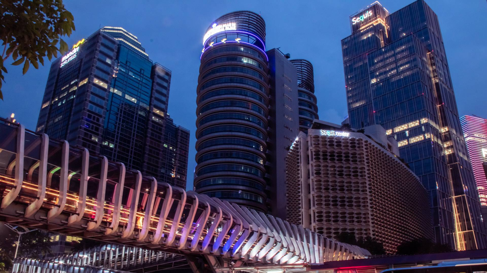

MyHometown
Some people might wonder why I have two cities as my hometown. The answer is simple, I was born in Jakarta, but I grew up in Bekasi. Both cities have a special place in my heart and I want to share some of their charms with you.
Fun facts: background image on home page is JPO Gelora Bung Karno located in Jakarta and background image on profile page is Kawasan Idustri MM 2100 located in Bekasi
Jakarta
Jakarta is the capital city of Indonesia, and the largest city in Southeast Asia. It is a bustling metropolis with a rich history and culture, as well as a modern skyline and infrastructure. Jakarta has something for everyone, whether you are interested in museums, monuments, shopping, nightlife, or cuisine.
Let's explore Jakarta's foods and tourists
Bekasi
Bekasi is a city in West Java province, located about 20 kilometers east of Jakarta. It is part of the Greater Jakarta metropolitan area and one of the fastest growing cities in Indonesia. Bekasi is known for its industrial and commercial sectors as well as its residential areas. Bekasi has a more laid-back atmosphere than Jakarta.
Let's explore Bekasi's foods and tourists